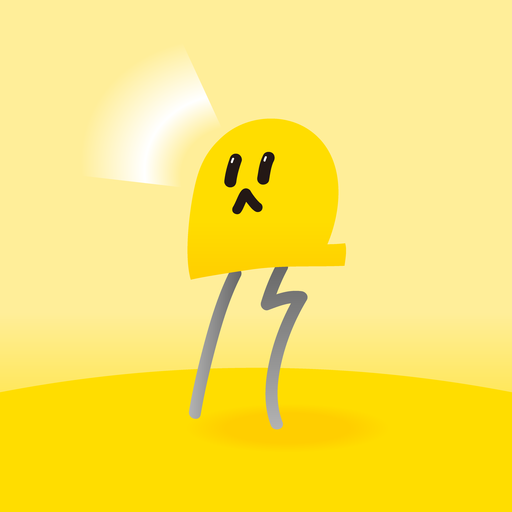

"인터랙티브 미디어와 사운드로 즐거움과 따스함을 전하는"
크리에이티브 테크놀로지스트 김연의
"Bringing Joy and Warmth through Interaction & Sound"
Creative Technologist Yeoneui Kim
사람의 목소리와 소리로 상호작용하는 보이스 인터랙티브 미디어 작품을 창작합니다.
인터랙티브 미디어아트, 실시간 관객참여형 공연 등, 기술을 접목한 예술, 상업 전시와 공연을 창작하고 감독합니다.
또한 실내, 외 축제들에 시민들이 참여할 수 있는 작품을 전시하여 긍정적이고 따뜻한 분위기를 조성하였습니다.
보이스 인터랙티브 작품 이외에도 사운드 인터랙티브 프로젝트, 일반적인 프로젝터 투사 등을 포함하는 실시간 인터랙티브 미디어아트 프로젝트들에도 참여하고 있습니다.
I create voice-interactive artworks that respond to and engage with human voices.
I have been responsible for creation and technical direction in art projects, commercial exhibitions, and interdisciplinary performances that incorporate interactive technology. Additionally, I have exhibited works at indoor and outdoor festivals aimed at local communities, encouraging citizen participation and fostering a positive and warm atmosphere at these events. Beyond voice-interactive works, I also contribute to real-time interactive media art projects, including sound-interactive installations and general projector-based projections.
소속 / Affiliation
구로문화재단 959아트플랫폼 입주 작가
비영리 인터랙티브 미디어아트 콜렉티브 <오픈소스랩> 대표 || Executive Director of Non-profit Interactive Media Arts Collective, Open Source Lab
예술 전시, 공연 / Exhibitions, Performances
2025 별빛소원 : 새로 이어지는 (수원문화재단, 2025 수원화성 미디어아트) || Starlit Wish : Through Birds Anew
2025 평화의 메아리 : 잘 살아 보세! (수원문화재단, 2025 수원화성 미디어아트) || Harmonious Echo : Live Peacefuly!
2025 Groovy Grovey : 숲속숲송 (특별체험기획전 <조각의 숲 : 달밤 여행>, 소마미술관 2관)
2025 조각들 프로젝트 (포항 문화재단, 제 6의 섬 프로젝트)
2025 관객참여형 공연 <기억의 도서관> 총감독 (춘천 공연예술창업지원센터)
2024 개인전 Voicescape : 목소리의 세상 (서울문화재단, 2024 청년예술인지원사업) || Voicescape : A World of Voices
2024 평화의 메아리 : 잘 살아 보세! (수원문화재단, 2024 국가유산 미디어아트 수원화성 신진작가전) || Harmonious Echo : Live Peacefuly!
2023 개인전 Fiat Lux : 빛이 있으라 (영등포 문화재단, 예술가를 위한 융합의 기술) || Fiat Lux : Let there be Light
2023 마음에 일었던 파동 (대구문화예술진흥원, 기술융합전시) || The Wave That Stirred the Mind
2023 Music Shower : 빛과 음악으로 샤워하다 (서울디자인재단, HCI학회) || Music Shower : Showered in Light and Music
2022 끌:력 서로가 서로를 이끄는 힘 (DDP, 서울디자인재단, 서울디자인2022 협력프로그램) || Pulling Force
2022 ()달 : 달달 무슨 달? (세종시문화재단, 세종축제 전문기획공모) || ()Moon : Moon Moon, What Kind of Moon?
2022 Touchin-strument (서초 유스센터 아트브릿지)
2022 Vuja de : 익숙한 무엇을 낯설게 하는 과정 (세종시문화재단, 전시공간 지원사업, 오픈소스랩 기획전) || Vuja de : The Process of Making the Familiar Strange
2022 Young Creative Korea (디노마드)
2022 시선 展 (모아도 프로젝트) || Gaze
2021 여정 : 여행을 정의하다 (조치원 도시재생지원센터, 오픈소스랩 기획전) || Journey : Defining Travel
2020 수담 : 물 이야기 (조치원 문화정원) || The Tales of Water
2020 만춘 展 (오픈소스랩 기획전) || Late Spring
협업 프로젝트 / Collaborations
2025 한윤정 <Dreaming Babies> 보이스 인터랙티브 포함 기술 구현 (2025 언폴드엑스, 문화역 서울)
2025 한윤정 <Sea Unseen> 기술 구현 (2025 ISEA, 서울대 미술관)
2023 입체음향 창작실험 <X-Axis> 인터랙티브 기술 구현 (아트코리아랩)
2022 인터랙티브 공연 <ABYSS : 심연> 인터랙티브 기술감독 (한국콘텐츠진흥원 콘텐츠임팩트)
상업 프로젝트 / Commercial
2025 코치 코리아 팝업스토어, 태비백 커스텀 모노그래밍 키오스크 콘텐츠 (대구 신세계 백화점)
2025 SKT T Factory, AI 감정인식 포토부스 (성수 T Factory)
2025 어린이 체험전 <쥬쥬베리 별별 탐사대> (포천 반월아트홀)
2025 체험형 아트뮤지엄 <푸룻푸룻프렌즈 빠씨를 찾아서> (소마미술관 2관)
2024 삼성 파리올림픽 기념 Z플립6 홍보부스를 위한 유니티 인터랙티브 콘텐츠 제작 (5개국 6개소 삼성 언팩킹, IFA, TwitchCon)
2024 교육형 아트체험 <푸룻푸룻프렌즈 과일우주여행> (경기상상캠퍼스)
2023 롯데백화점 My Dearest Wish 인터랙티브 미디어를 위한 유니티 애니메이션 제작 (명동본점, 인천점, 부산본점)
2021 유아교육용 인터랙티브 웹 <세종아이 온라인 놀이터> 개발, 배포 (세종시유아교육청 유아교육원)
역할 및 활동 / Professional Activities
2026 한국문화예술위원회 APE CAMP 퍼실리테이터 || 2026 APE CAMP Facilitator
2025 제30회 ISEA (국제전자예술심포지엄) Artist Talk, How People Engage with Voice Interactive Media: Based on Responses to “Harmonious Echo”
2025 한국문화예술위원회 APE CAMP 퍼실리테이터 || 2025 APE CAMP Facilitator
2024 한국문화예술위원회 APE CAMP 우수참여자 선정, 캐나다 방문 || 2024 APE CAMP Excellent Camper, Research Trip to Canada
수상 / Awards, Scholarships
2025 대한민국 AI 콘텐츠 어워즈, Pitch the Future 음악부문 2위 수상 (므네모리움 : 기억의 도서관), 경기콘텐츠진흥원
2025 춘천공연예술창업지원센터 합톤 우수상 (기억의 도서관)
2020 한국장학재단 예술체육비전장학금
학력 / Educations
홍익대학교 디지털미디어디자인 전공 졸업
부산예술고등학교 디자인전공 졸업